library(epiSeeker)
files <- getSampleFiles()
print(lapply(files, basename))
#> $ARmo_0M
#> [1] "GSM1174480_ARmo_0M_peaks.bed.gz"
#>
#> $ARmo_1nM
#> [1] "GSM1174481_ARmo_1nM_peaks.bed.gz"
#>
#> $ARmo_100nM
#> [1] "GSM1174482_ARmo_100nM_peaks.bed.gz"
#>
#> $CBX6_BF
#> [1] "GSM1295076_CBX6_BF_ChipSeq_mergedReps_peaks.bed.gz"
#>
#> $CBX7_BF
#> [1] "GSM1295077_CBX7_BF_ChipSeq_mergedReps_peaks.bed.gz"
peak <- readPeakFile(files[[4]])
peak
#> GRanges object with 1331 ranges and 2 metadata columns:
#> seqnames ranges strand | V4 V5
#> <Rle> <IRanges> <Rle> | <character> <numeric>
#> [1] chr1 815093-817883 * | MACS_peak_1 295.76
#> [2] chr1 1243288-1244338 * | MACS_peak_2 63.19
#> [3] chr1 2979977-2981228 * | MACS_peak_3 100.16
#> [4] chr1 3566182-3567876 * | MACS_peak_4 558.89
#> [5] chr1 3816546-3818111 * | MACS_peak_5 57.57
#> ... ... ... ... . ... ...
#> [1327] chrX 135244783-135245821 * | MACS_peak_1327 55.54
#> [1328] chrX 139171964-139173506 * | MACS_peak_1328 270.19
#> [1329] chrX 139583954-139586126 * | MACS_peak_1329 918.73
#> [1330] chrX 139592002-139593238 * | MACS_peak_1330 210.88
#> [1331] chrY 13845134-13845777 * | MACS_peak_1331 58.39
#> -------
#> seqinfo: 24 sequences from an unspecified genome; no seqlengths2 Data profiling
The datasets CBX6 and CBX7 in this vignettes were downloaded from GEO (GSE40740)(Pemberton et al. 2014) while ARmo_0M, ARmo_1nM and ARmo_100nM were downloaded from GEO (GSE48308)(Urbanucci et al. 2012) . epiSeeker provides readPeakFile to load the peak and store in GRanges object.
2.1 Coverage plot
After peak calling, we would like to know the peak locations over the whole genome, plotCov function calculates the coverage of peak regions over chromosomes and generate a figure to visualize. GRangesList is also supported and can be used to compare coverage of multiple bed files.
plotCov(peak, weightCol="V5")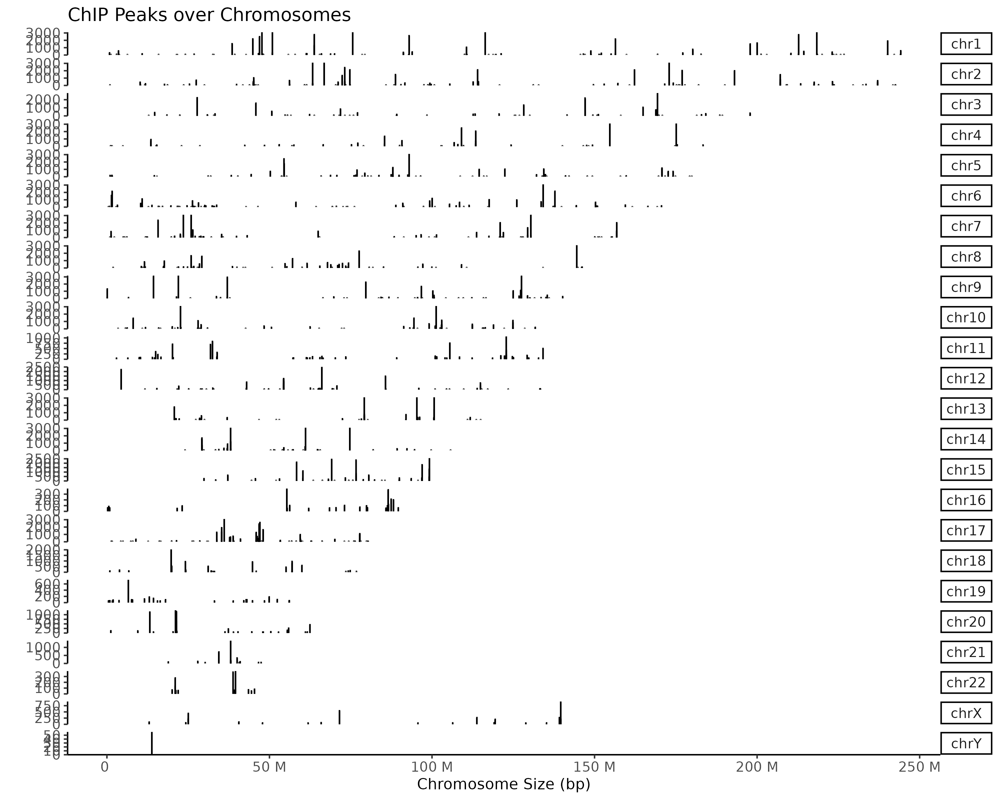
Interactive function is also supported by epiSeeker. When the user hovers the mouse over the corresponding element, it can display the position and value of the peak.
plotCov(peak, weightCol="V5", chrs=c("chr17", "chr18"), xlim=c(4.5e7, 5e7), interactive = TRUE)Hierarchical clustering and co-accessibility relationships and will emerge in the process of analyzing the peak coverage of multiple samples. Here we provide function to plot the hierarchical clustering tree based on the input peak data. Co-accessibility is also supported to be visualized in the picture by showing the peak pairs with the highest positive correlation scores and the highest negative correlation scores.
pancancer_atac <- readRDS("./data/pancancer_atac.rds")
fill_color <- c("#a10589", "#fce364", "#854d23", "#c0b742",
"#1c670d", "#3ec486", "#f7bbff", "#ee0700",
"#172ec5", "#f56103", "#3f3a95", "#7a7875",
"#e06cdc", "#7effff", "#f9b250", "#af1e18",
"#997f69", "#9d82ed", "#40bcf5", "#f28582",
"#97be8c", "#7b2ed0", "#81f75b")
design <- "AAAB
AAAB
AAAB
CCC#"
atac_p <- plotCov(pancancer_atac, weightCol = "V5",
chrs = "chr8", title = "",
xlim = c(126712193, 128412193),
xlab = "", fill_col = fill_color,
legend_position = 'none', facet_var = ".id~.",
add_cluster_tree = TRUE,
add_coaccess = TRUE,
design = design)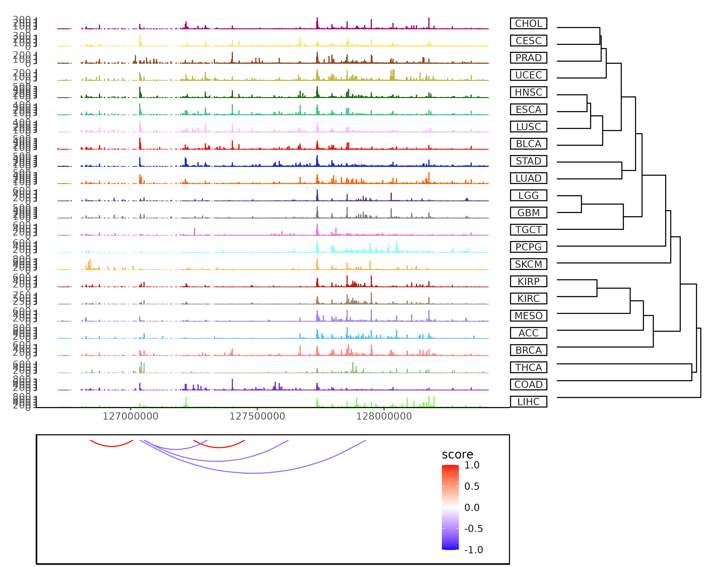
When peak is a GRangesList object, user can set the colors directly or by passing a palette to fill_color.
peaks <- lapply(files[4:5], readPeakFile)
plotCov(peaks, weightCol = "V5", fill_color = c("red","blue")) +
theme(legend.position = "inside",
legend.position.inside = c(0.8,0.2))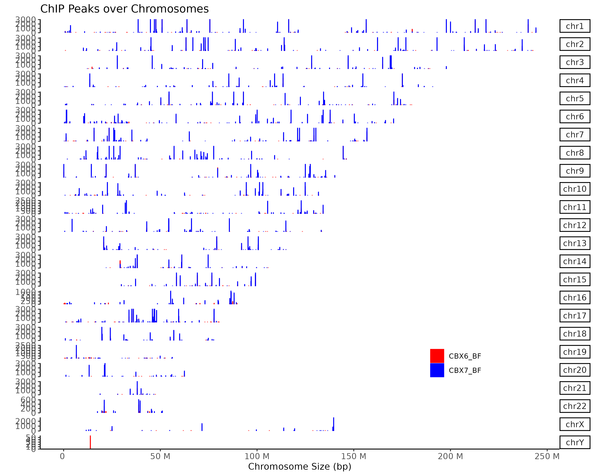
2.2 Profile of data in specific regions
First of all, for calculating the profile of data in specific region, we should align the data that are mapping to these regions, and generate the tagMatrix. Following parameters control what kinds of matrix can be derived.
- Region parameters: two parameters to control which region to plot: (1)
by: users can select one of gene, transcript, exon, intron, 3UTR, 5UTR, and UTR. This parameter control which type of region to be showed.
type: users can select one of start_site, end_site and body. This parameter controls the start site or end site or body region to be showed.
- Mode parameters: users can use two modes to get the tagMatrix: (1) normal mode: each region of interest will be visualized by original resolution, which means one figure in the picture represents one base pairs in the genome.
- binning mode: Users can input
nbinparameter to turn on this mode, each region of interest will be visualized in a binning resolution, which means one point in the figure may represent several base pairs(e.g. 100 bp). Using this mode can speed up the function. The most important is that if users select the body region to visualize, binning mode is necessary to align all the body region.
Extension parameters: we provides
upstreamanddownstreamparameters to extend the region of interest. If we want to visualize the gene region, start_site mode will return region of (TSS – upstream, TSS + downstream), end_site mode will return region of (TES –upstream, TES + downstream), and body mode will region region of (TSS – upstream, TES + downstream). If user select body mode, upstream and downstream parameters can also be a rel object(e.g. rel(0.2)), which means upstream and downstream parameter be length(region) * 0.2.Reference parameters: users can input
TxDbobject as reference. If users do not want to methods above to get the region of interest, users can provide a granges through windows parameters.
Since tagMatrix has been derived, epiSeeker provide two functions to visualize it: (1) plotPeakProf() function: visualize tagMatrix in a line graph. (2)plotPeakHeatmap() function: visualize the tagMatrix in a heatmap. We also provide plot_prof parameter in plotPeakHeatmap() that can plot the line graph and heatmap in a figure.
There are two crucial mode in visualizing tagMatrix. (1) missingDataAsZero: this parameter determine how to treat the area that do not have signal. For example, users specific a region of 6,000 bp, but the peak only have a region of 200 bp, the rest region is the missing data. If missingDataAsZero is TRUE, then all the missing value will be set to 0. If this value is FALSE, then the missing value will be NULL, and will be filtered in the following visualization. (2) statistic_method : tagMatrix is a matrix that contains many regions of the same type, for example, all the TSS region. statistic_method parameter determine how to combine these regions in the figure. We use mean method as default, which means we will calculate the mean signal of each point.
2.2.1 Profile of one sample of one reference region
Here we show the usage of one sample. by = "transcript" means we visualize data in transcript region. type = "start_site" means plot the start site region, here is the transcript start site(TSS). upstream = 3000, downstream = 3000 means the extension of start site, here is the region of (TSS - 3000 bp, TSS + 3000 bp).
plotPeakHeatmap() can be used to visualize the tagMatrix, with plot_prof can plot the heatmap and line graph in a single figure. statistic_method = "mean" means that this function aggregate multiple region by mean methods. missingDataAsZero = TRUE means that we treat missing data as zero that will not be filtered in the following analysis. conf = 0.95, resample = 1000 means in the line plot using 95% confidence interval and resample 1000 times.
tssTagMatrix <- getTagMatrix(peak = peak, upstream = 3000, downstream = 3000, weightCol = "V5",
type = "start_site", by = "transcript", TxDb = txdb)
# plot_prof = FALSE will plot only heatmap
plotPeakHeatmap(tssTagMatrix, plot_prof = TRUE,
statistic_method = "mean",
missingDataAsZero = TRUE,
conf = 0.95, resample = 1000)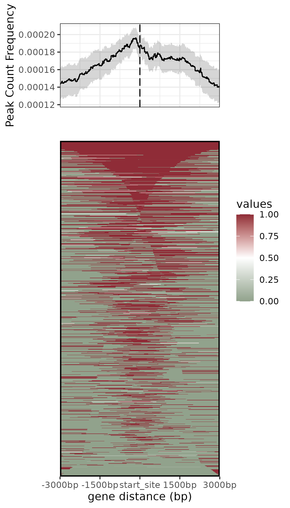
If users want to plot line graph only, can use plotPeakProf() to plot.
plotPeakProf(tssTagMatrix, conf = 0.95, resample = 1000)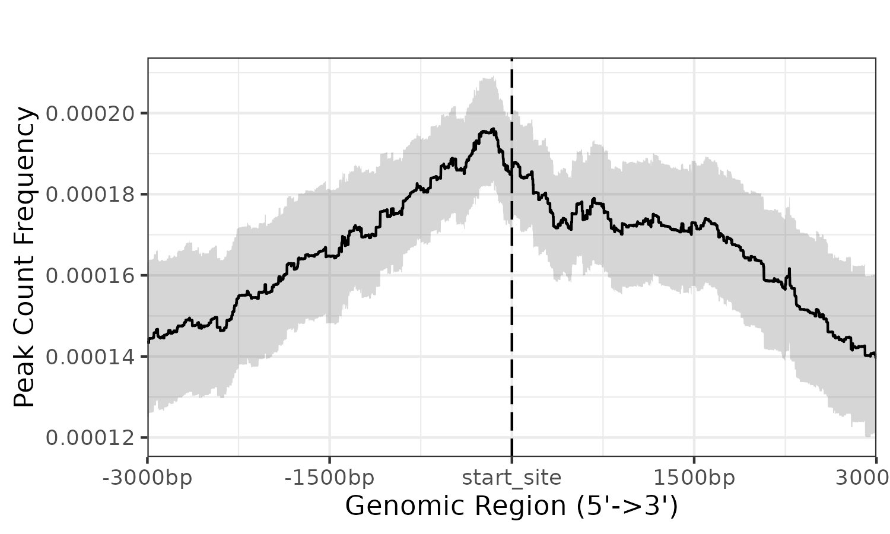
If users want to speed up function, users can use nbin parameter. Using binning mode nbin = 1000 to plot TSS region of 6000 bp, this means a point in figure represents 6 bp in genomic.
tssTagMatrix_nbin <- getTagMatrix(peak = peak, upstream = 3000, downstream = 3000,
weightCol = "V5",
nbin = 1000, # set nbin paramter to turn on binning mode
type = "start_site", by = "transcript",
TxDb = txdb)
plotPeakHeatmap(tssTagMatrix_nbin, plot_prof = TRUE,
statistic_method = "mean",
missingDataAsZero = TRUE,
conf = 0.95, resample = 1000)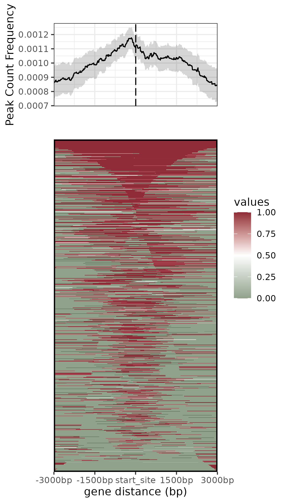
Body region is an important region to be analyzed, users can select body region through type parameter.
In this example, show the visualization of gene body region with actual number(3000 bp) extension.
geneBodyTagMatrix <- getTagMatrix(peak = peak,
upstream = 3000, downstream = 3000,
weightCol = "V5", type = "body",
by = "gene", TxDb = txdb, nbin = 1000)
plotPeakHeatmap(geneBodyTagMatrix, conf = 0.95)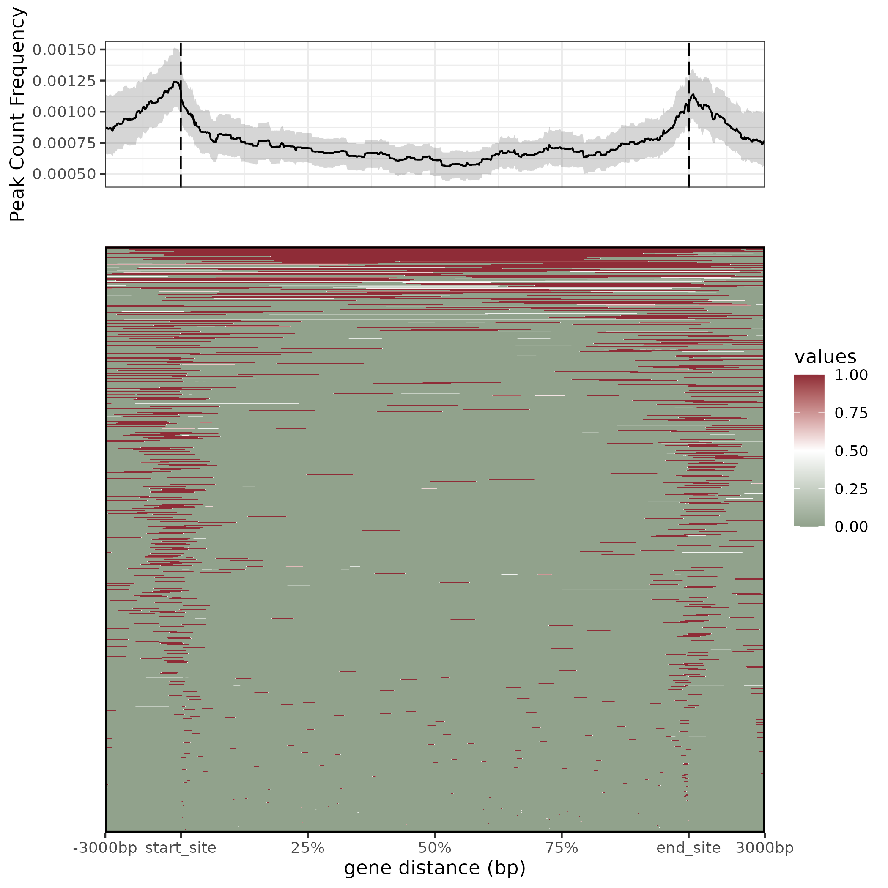
Extension can also be rel object, here rel(0.2), means the extension is 20% of each gene length.
geneBodyTagMatrix_rel <- getTagMatrix(peak = peak,
upstream = rel(0.2), downstream = rel(0.2),
weightCol = "V5", type = "body",
by = "gene", TxDb = txdb, nbin = 1000)
plotPeakHeatmap(geneBodyTagMatrix_rel, conf = 0.95)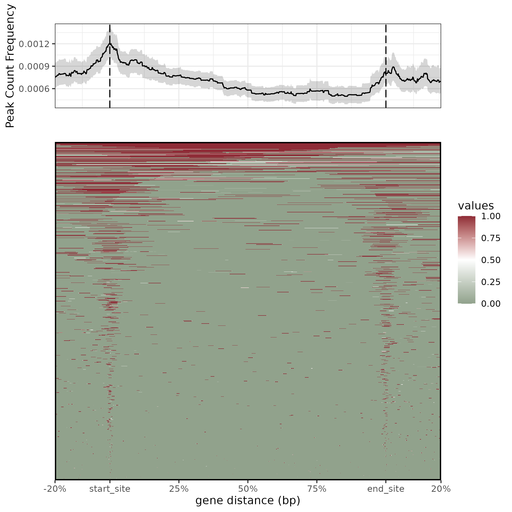
2.2.2 Profile of one sample of multiple reference regions
Users can visualize data profile in different types of regions by providing multiple values to by. This example show the start site region of gene and intron.
gene_intron_tssTagMatrix <- getTagMatrix(peak = peak,
upstream = 3000, downstream = 3000,
weightCol = "V5",
type = "start_site",
by = c('gene', 'intron'), TxDb = txdb)
plotPeakHeatmap(gene_intron_tssTagMatrix, conf = 0.95)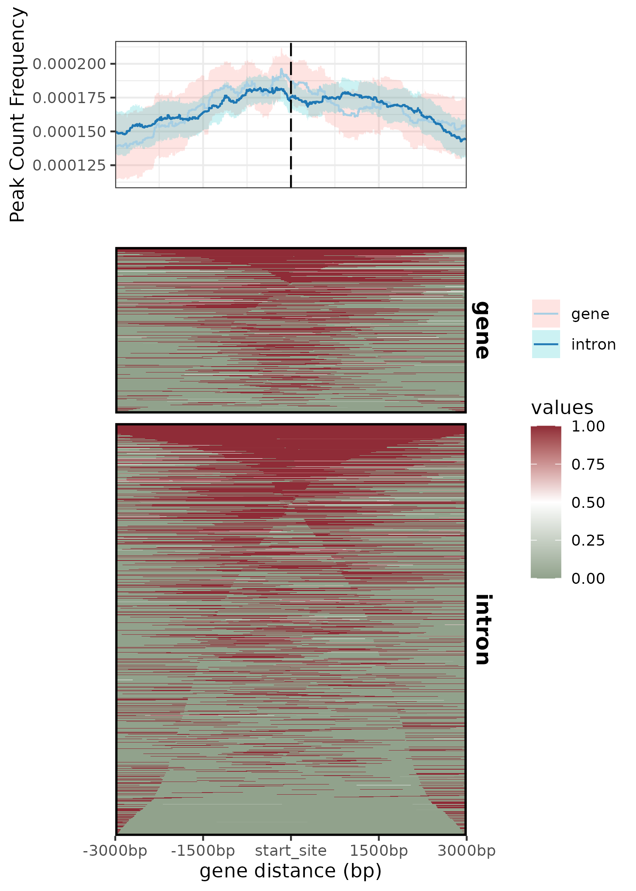
2.2.3 Profile of multiple samples of one reference region
Users can input a GRangesList object to visualize multiple samples.
tssTagMatrix_list <- getTagMatrix(peak = peaks,
upstream = 3000, downstream = 3000,
type = "start_site", by = "transcript",
TxDb = txdb)
plotPeakHeatmap(tssTagMatrix_list, conf = 0.95)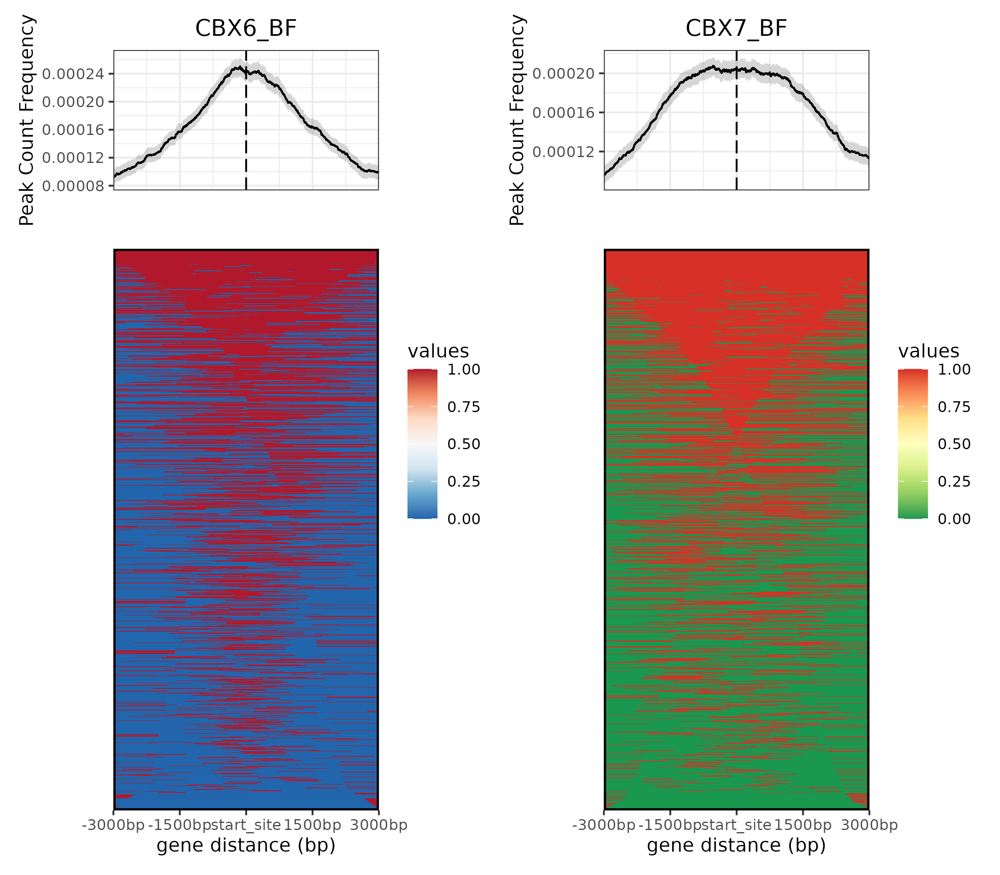
2.2.4 Profile of multiple samples of multiple reference regions
Users can input a GRangesList object and different values to by parameter to profile multiple samples of multiple reference regions. peak parameter in getTagMatrix can not only recept GRanges/GRangesList object but also bed file path.
gene_intron_tssTagMatrix_list <- getTagMatrix(peak = files[4:5],
upstream = 3000, downstream = 3000,
weightCol = "V5",
type = "start_site", by = c('gene', 'intron'), TxDb = txdb)
plotPeakHeatmap(gene_intron_tssTagMatrix_list, conf = 0.95)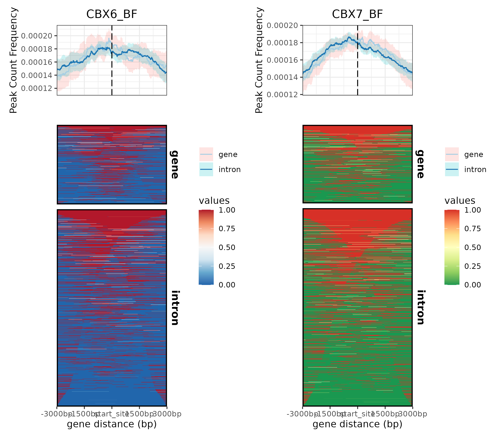
Pemberton, Helen, Emma Anderton, Harshil Patel, et al. 2014. “Genome-Wide Co-Localization of Polycomb Orthologs and Their Effects on Gene Expression in Human Fibroblasts.” Genome Biology 15 (2): R23. https://doi.org/10.1186/gb-2014-15-2-r23.
Urbanucci, A, B Sahu, J Seppälä, et al. 2012. “Overexpression of Androgen Receptor Enhances the Binding of the Receptor to the Chromatin in Prostate Cancer.” Oncogene 31 (17): 2153–63. https://doi.org/10.1038/onc.2011.401.